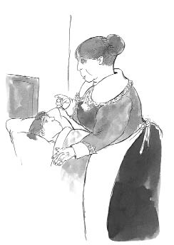

Yargıç Fang aksi bir tavırla, “Sen de kimsin?” diye sordu.
Yeni gelen adam, yerde baygın bir halde yatmakta olan Oliver’ı göstererek, “Ben geçitteki kitap tezgâhını işletiyorum!” dedi. “Hırsızlık yapan başka bir çocuktu, bu zavallı küçük çocuk değil!”
Yargıç Fang kaşlarını çattı ve homurdanarak, zamanını boşa harcayan bu insanlardan yakınmaya başladı. Oliver’ı suçsuz bulmaktan başka bir şey yapamazdı.
Oliver mahkeme salonunun dışındaki kaldırıma bırakıldı. Bay Brownlow hemen onun yanına koştu, eğilip ona endişeyle baktı.
“Aman Tanrım, ne kadar da solgun! Üstelik titriyor! Ateşi var, bunun sorumlusu benim! Birisi hemen bir araba çağırsın!” dedi.
Oliver kendine geldiğinde sessiz, gölgeli bir odada yattığını gördü. “Burası neresi?” diye mırıldandı.
Yatağın yanında, tombul, anaç görünüşlü yaşlı bir kadın belirdi. Yüzünde tatlı, sevecen bir ifade vardı.
“Şşş, canım!” dedi yavaşça. “Şimdi sessiz olmalısın, yoksa yeniden hasta olacaksın!”
Kadının adı Bayan Bedwin’di ve Bay Brownlow’un kâhyasıydı. Bayan Bedwin, birkaç gün daha Oliver’a baktı ve Bay Brownlow’un onu görmeye gelebileceği kadar iyileşene dek Oliver’ın her ihtiyacını karşıladı.
Yaşlı adam, “Şimdi kendini nasıl hissediyorsun, sevgili çocuğum?” diye sordu.
Oliver da, “Ah, çok daha iyi ve çok mutluyum efendim. Bana yaptığınız bunca iyilik için size nasıl teşekkür edeceğimi bilemiyorum,” diye yanıtladı Bay Brownlow’u.
Oliver bunları söylerken, Bay Brownlow ona dikkatle bakıyordu. Bu zavallı, bakımsız çocuk ona birini hatırlatıyordu, ama kimi? Sonra cevabı buldu. Elbette! İşte şu portre! Bay Brownlow, Oliver’ın başının hemen üstündeki duvarda asılı duran resme baktı. Güzel, genç bir kadının resmiydi bu. Bay Brownlow tekrar Oliver’a baktı ve irkildi.
Nefesini tutarak, “Bayan Bedwin!” dedi. “Görüyor musunuz? Bu çocuk -gözleri, ağzı, yüz ifadesi- her şeyiyle resimdeki yüzün aynısı!”